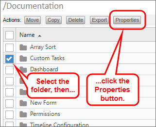
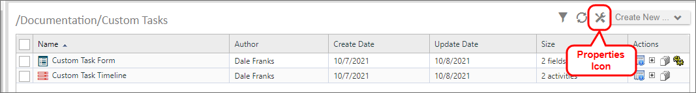
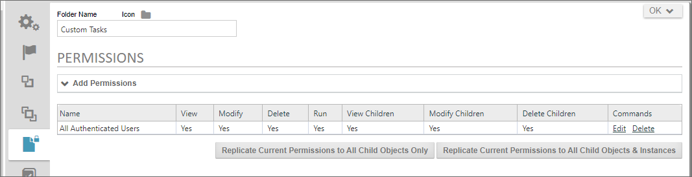

In the Content List, at the level of each folder, you may set permissions for that folder by


With either method, once the properties screen opens, you can navigate to the Permissions tab of the object definition.

You can add, edit, or delete folder permissions from this screen. A fully-detailed explanation of permissions is documented in the Permissions topic of the Implementer's Reference.
You have the ability to replicate all permissions of the parent folder to all of the child objects in the folder. You have two options for doing so.
First, you can Replicate permissions to all child objects, which won't only overwrite the existing permissions on definition objects, it will also overwrite permissions on all of the form and process instances—including those instances that are active and in-progress. This may completely change the ability of users to complete active process or Form instances, so you should exercise caution in using this option in the production environment.
You also have the option, though, to replicate the permissions to child all child objects except for Form, Workflow, and Process Timeline instances. This is probably the preferred option for replicating folder permissions in the production environment where there are active processes running. Future process and form instances will be created under the new permissions regime, but existing instances will still run under the permissions regime that was valid when they were created.